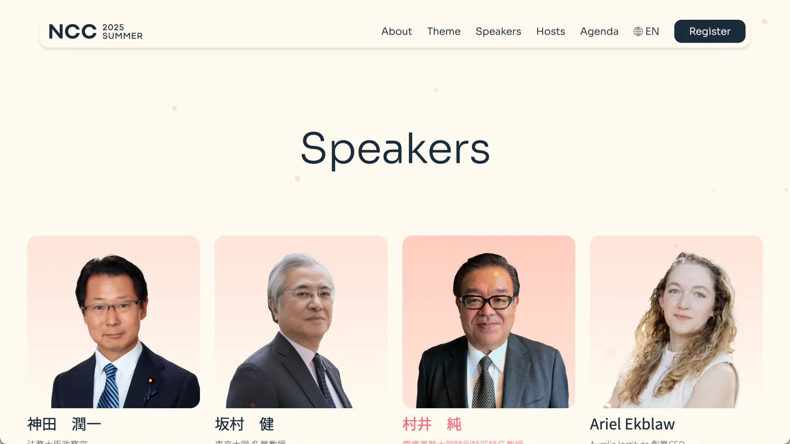
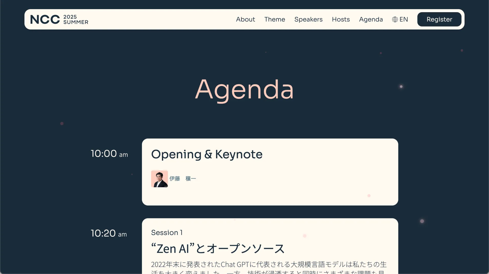

NCC Summer 2025
UI/UX Design & Front-End Development
NCC 2025 TK Summer is a dedicated event microsite built to support a single conference edition. Excluding the provided key visual and logo, I led the design and full front-end implementation, delivering a motion-driven, responsive HTML site.
Scope
- UI/UX design
- Layout and visual system design
- Front-end architecture (HTML / CSS / JavaScript)
- Animation design and implementation
- Responsive development
- Performance optimization
Challenges
- Translating an externally provided key visual into a cohesive web system
- Designing around fixed brand assets while maintaining consistency
- Balancing motion with performance
- Ensuring clarity across content-heavy sections
Approach
- Designed a layout system aligned with the provided visual identity
- Built a fully custom HTML structure without CMS dependency
- Implemented motion using lightweight, performance-conscious animation
- Optimized for smooth rendering across desktop and mobile
Results
The site delivers a cohesive experience aligned with the event's visual identity. Animation enhances engagement without compromising performance. The implementation remains lightweight and stable across devices. The structure allows for fast deployment and straightforward updates.

